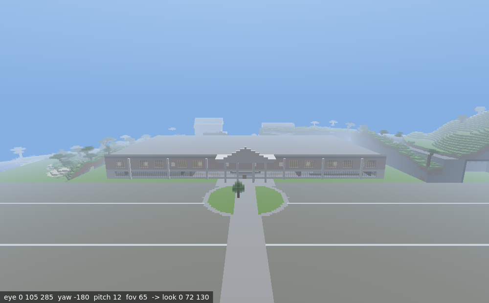
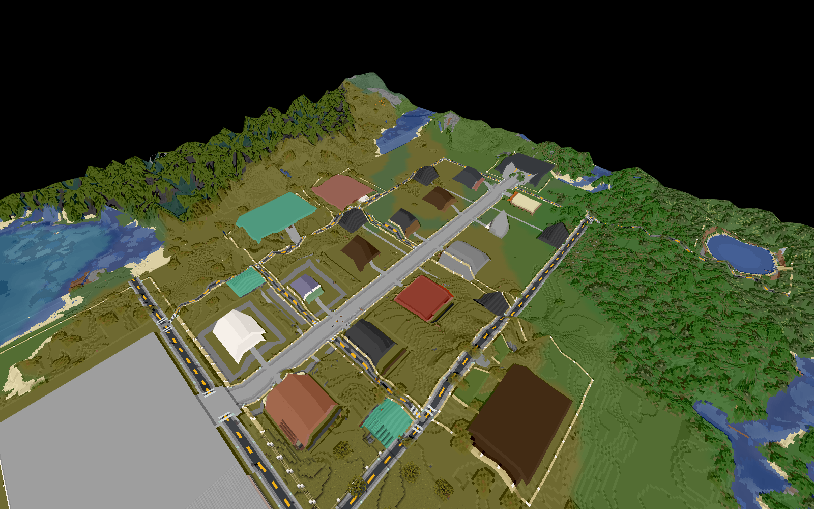

Canonical envelope
SITE X/Z -300..300, Y 62..319. The larger catalog union reflects a retired outer fence and south-arrival geometry.
Masterplan 07 · Accepted campus control layer
A 600×600-block reconstructed campus at world origin: visitor arrival, model-home streets, civic and service buildings, plus a vertically integrated east-mountain operations complex.
Accepted as-built baseline. Repository evidence records physical closure and successful QA. This report made no live-world call, so new work starts with a saved-world condition refresh and a defect- or proposal-specific review packet.
SITE X/Z -300..300, Y 62..319. The larger catalog union reflects a retired outer fence and south-arrival geometry.
Preserve accepted assets. Future scope is maintenance, accessibility, interpretation or separately approved redevelopment—not blanket rebuilding.
Real-world program evidence and creative Minecraft architecture remain separately labeled. Exact Minecraft appearance is not historical fact.



| Anchor | Catalog bounds | State |
|---|---|---|
| Guest & Design Center B01 | X -72..72, Z 90..165 | complete |
| Main Street R01 | X -4.5..4.5, Z -294.5..289.5 | complete |
| C01 operations complex | X 100..300, Z 70..235 | complete |
| Public entry | X 90..130, Z 171..205 | complete |
| Surface hangar / observatory | X 176..234 / 175..235, Z 138..181 / 137..182 | complete, vertically stacked |
| Shelter / grand vault | X 148..188 / 230..262, Z 143..180 / 184..226 | complete |
| Domain | Accepted / cataloged | Proposed control |
|---|---|---|
| Hierarchy | SITE, 13 districts and successor boundaries | Periodic audit; retain removed F01 as history |
| Roads and arrival | Connected local network, parking, alleys and garage links | Fresh route, lighting and accessibility regression |
| Buildings/interiors | 32 buildings, 126 rooms, multiple accepted QA waves | Condition survey and defect-only maintenance |
| Mountain complex | Public and private vertical program cataloged | Preserve exact 3D interfaces; survey before expansion |
| Media | Campus maps, matched captures and floorplans | Same-camera condition views for future releases |
| Historical interpretation | Confidence-labeled evidence set | Retain labels whenever visitor content changes |
ACCEPTED BASELINENO NEW PHYSICAL AUTHORITY
PassageWay is the proper name of the shared underground tunnel system. MainStreet rooms, portals and shared route infrastructure must retain explicit exact owners.
R08 wayfinding points toward Westlight. Signs and names are not ownership; external connections need exact endpoint contracts and end-to-end route QA.
Later dry-complex, portal and regional programs remain separate scopes unless a reviewed migration assigns exact cells.
Two-dimensional bounds overlap throughout C01. Collision and ownership are governed by exact three-dimensional cells.
Historical WorldGuard and operator notes may be stale. Verify current state only through an explicitly authorized read-only workflow.
Every change requires immutable pre-state, exact guards, container/entity protection, strict no-op semantics, exact inverse and post-state QA.
| ID | Issue | Closure |
|---|---|---|
| MSA-H01 | Live condition not surveyed for this plan | New immutable saved-world census and condition report |
| MSA-H02 | Superseded plans coexist with as-built records | Use durable catalog/latest QA; label historical geometry |
| MSA-H03 | Stacked ownership is complex | Exact 3D owner/interface audit for every candidate target |
| MSA-H04 | External routes have separate owners | Exact interface contracts and bidirectional route QA |
| MSA-H05 | Maintenance can become redesign | Evidence-backed defect register and scope-specific approval |
| MSA-H06 | Current protection state unknown here | Authorized read-only configuration verification |
Complete for planning: SITE is the envelope; catalog and latest accepted QA outrank superseded coordinates; reconstruction confidence labels remain binding.
Next: bind a complete saved world, repeat feature/material/route/parking/portal checks and publish a delta against the latest accepted immutable snapshot.
Exact 3D owners, evidence-backed defects, matched views, protected entities/containers and rollback design.
Authority required: plan, sections, visual simulations, route impact, hashes, preflight, rollback and acceptance matrix.
Exact post-state/inverse proof, full regression, proven catalog import, preserved prior scans and refreshed maps/media.
The AI/source plan is MASTERPLAN.md. Primary evidence: read-only world map database, the project front door, historical site plan, closure audit, redevelopment completion record and machine QA.
Derived: current database counts, catalog union and property-union explanation. Not performed: live calls, internet research, RCON, systemd operations, database writes or world mutation.